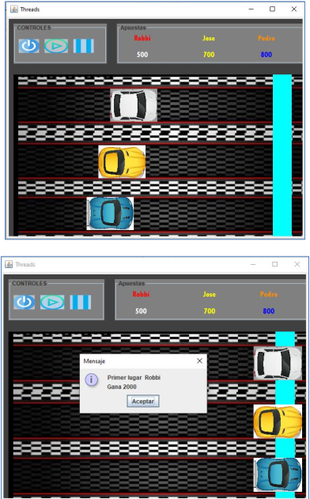

Entre los proyectos más representativos que he realizado son programas
creados en C; C++ y Java.
Mis proyectos estaban basados en un requerimiento en específico el cual
era un programa que ayude a la compra de boletos para un cine de manera
on line. El lenguaje que utilice para la primera parte fue C++ en esta parte
constaba de un programa que presentaba la funcionalidad requerida pero no utilizaba
interfaz gráfica es decir se podía evidenciar solo en la salida de una terminal, pero
la funcionalidad era la misma que una boletería normal, podía elegir una película desde
cartelera, elegir los asientos y pagar como el usuario desee. Como segunda parte realice
la interfaz gráfica, pero en otro lenguaje y en este caso fue Java, una vez estudiado este
lenguaje realice el proyecto donde uní los nuevos conocimientos con los anteriores para
unir la misma funcionalidad que antes con la nueva interfaz creada y el resultado fue el
más optimo.
parte de proyectos que conlleva programación también realicé un proyecto en la asignatura Redes de las Computadoras donde pude comprender como funciona la red de una empresa ya que el proyecto constaba en crear la topología mas adecuada para un entorno de trabajo amplio, en este proyecto pude armar una red y configurarla para cada requerimiento que se necesita en una empresa, también se configuro para que funcionen dos servidores que a su vez brindaban los servicios más esenciales.
Infraestrucutra
Durante la carrera he realizado varias tareas sobre interfaz grafica y hilos.
1. Tienda: En este programa se requería desarrollar un programa para una tienda de
abarrotes con el IDE Qt en el cual se aprecie GUI, donde se especificaron varios requerimientos
donde existian validaciones, ventana para registro y venta de productos.
2. Carrea de autos: En este programa se requería crear un juego de carreras utilizando hilos y cumpliendo con requerimientos tales como: Colocar un escenario de fondo referente a una pista de carros, utilizar las funciones de stop, play, encender y que al iciio del programa se pueda apostar por uno de los 3 competidores añadiendole un nombre a cada uno.
